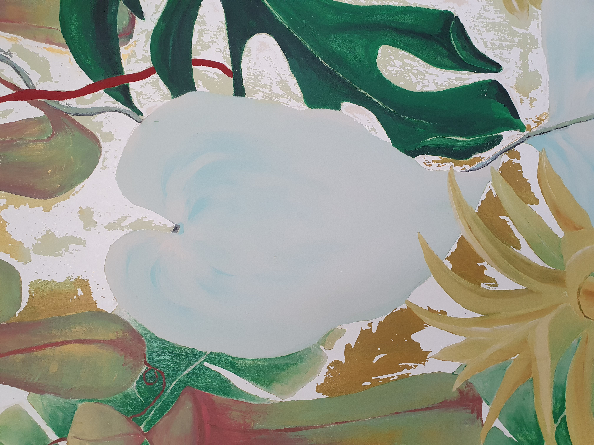
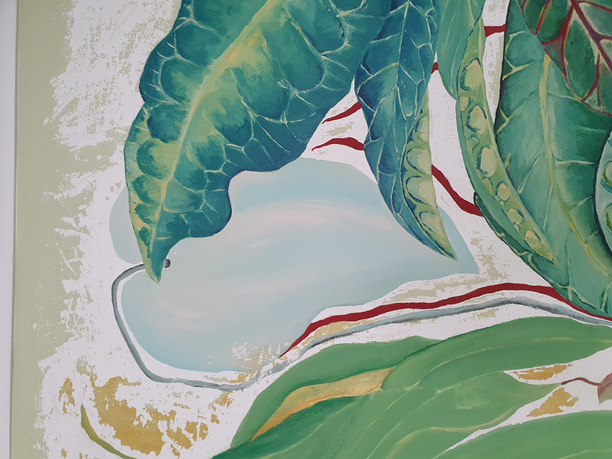
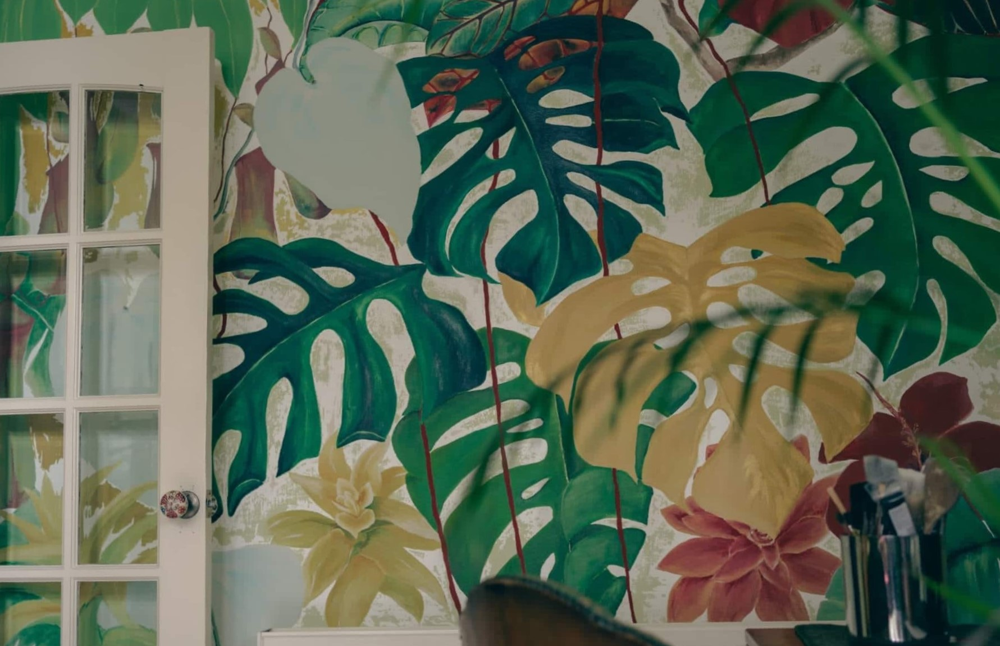

After decorating every room in a flat I only just moved into I still felt enthusiastic about painting some more. With lockdown in progress I started with sketching shapes of oversized Monstera plant leaves. Since I was being creative in my home, I was able to keep adding colours, flowers and other plants every day. After 5 months I completed the wall by gently sanding or scraping the background to add the texture.
As I was working in the comfort of my home, I was able to work anytime I wished. Finding passion and satisfaction throughout, I then explored the possibility to create alternative images outside my home. I created my own stencils using my wall as a template, which allowed me to replicate the shapes more promptly. Nagging my friends to provide me with a wall space, I moved onto my first outside project: “Tropical in Govanhill”.


